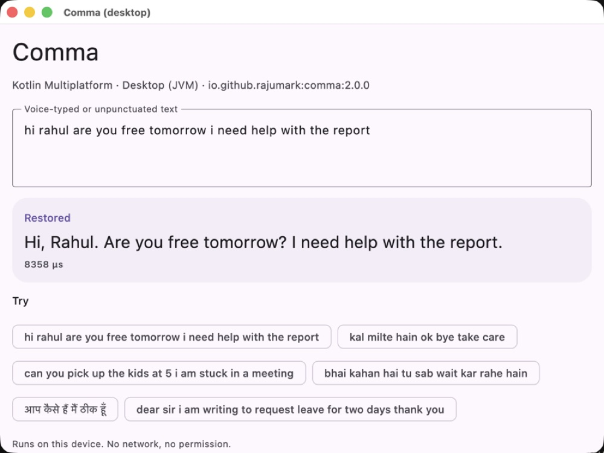
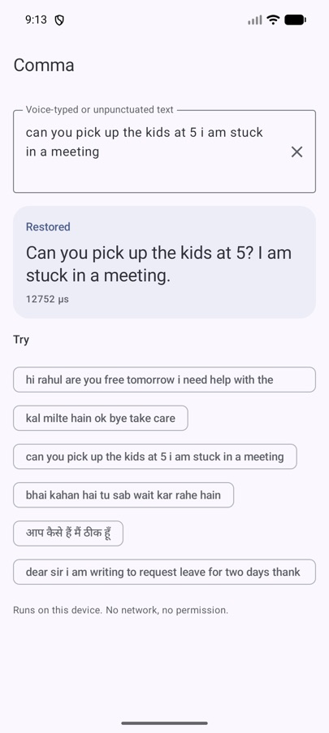
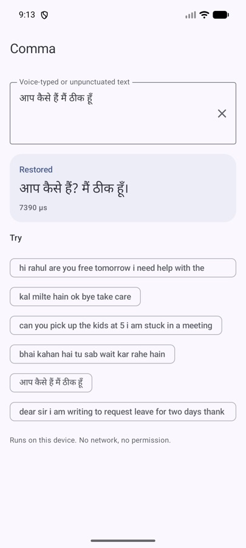
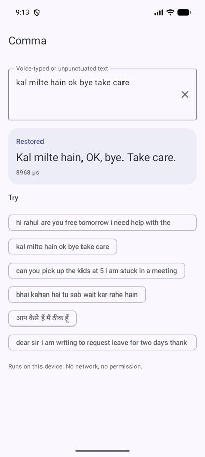

Tutorial: fix voice-typed text in 15 minutes with Comma (Kotlin Multiplatform)
Speech-to-text hands you a wall of lowercase words with no full stops. By the end of this tutorial your app will turn that into proper sentences, on the device, in English, Hinglish, Hindi and more than a dozen other languages.

What you'll build
A text box that takes whatever your speech-to-text engine (or a hurried user) produces, and returns readable text:
Notice the second one: Hindi gets its own full stop, ।, not a Latin dot. Urdu gets ۔ and ؟. Getting those right is most of the reason Comma exists.
You'll need
- A Kotlin project: Android, Compose Multiplatform, a JVM desktop app, or Kotlin/JS or Wasm.
- Android
minSdk21 or higher, if you target Android. - Some source of unpunctuated text. Speech-to-text is the classic one, but chat input works too.
No API key, no account, no network permission.
1Add the dependency
Comma is on Maven Central. In a multiplatform project put it in commonMain; in a plain Android project, in the app module.
// build.gradle.kts
dependencies {
implementation("io.github.rajumark:comma:2.0.0")
}Gradle picks the right artifact per platform (comma-android, comma-iosarm64, comma-wasm-js and so on). There's no native code to package and no ABI splits to think about.
2Load the model once
Loading takes about 250 ms, so do it once, off the main thread, and keep the instance. restore() is thread-safe, so one instance can serve the whole app.
object Punctuation {
private val comma = lazy { Comma() }
suspend fun fix(text: String): String = withContext(Dispatchers.Default) {
comma.value.restore(text)
}
}If you use dependency injection, register Comma() as a singleton instead. It's AutoCloseable; call close() only if you really want the memory back.
3Wire it into your UI
Here's the core of a Compose screen. The same code runs on Android, iOS and desktop with Compose Multiplatform:
@Composable
fun VoiceNoteField(transcript: String) {
var fixed by remember { mutableStateOf("") }
LaunchedEffect(transcript) {
fixed = if (transcript.isBlank()) "" else Punctuation.fix(transcript)
}
Column {
Text("You said", style = MaterialTheme.typography.labelMedium)
Text(fixed.ifEmpty { transcript })
}
}Pass in whatever your speech engine returns. Because LaunchedEffect is keyed on the transcript, a new result cancels the previous one, so partial results while the user is still speaking don't pile up.
4Handle long voice notes
You don't need to split anything yourself. Comma reads long text in overlapping windows of 128 tokens, so every word has context on both sides, even in a two-minute voice note. Just pass the whole transcript.
val note = Punctuation.fix(fullTranscript) // a whole paragraph is fine5Know what it will change
Comma replaces existing punctuation and re-cases the text. That's deliberate: messy input like OK, bye!!! take care... comes out consistent. But it means you should run it on raw speech or chat input, not on text a user has carefully written. A good pattern is a small “Fix punctuation” button, or applying it automatically only to text that came from speech.
comma.restore("OK, bye!!! take care...") // re-punctuated and re-cased
comma.restore(" ") // "" for blank text6Try it on real input
Before you ship, feed it twenty messages from your own domain. These are the numbers to expect (word-level F1, higher is better, on test sets never used for training):
| Comma | XLM-R punctuation + true-case | |
|---|---|---|
| Hinglish chat, punctuation / capitals | 0.83 / 0.92 | 0.49 / 0.70 |
| English chat, punctuation / capitals | 0.86 / 0.96 | 0.72 / 0.91 |
| Hand-written messages fully right | 43% | 26% |
| Formal text, 18 languages, punctuation | 0.65 | 0.76 |
| Size | 7.8 MB | 1.1 GB |
Read that honestly: on chat and messages Comma is clearly ahead. On long formal prose (news, encyclopedia text) the 1.1 GB models place commas better. If your app is a messenger, a notes app or a voice assistant, you're in Comma's territory.


।
Troubleshooting
“It put ! where I wanted .” Exclamation vs full stop is a judgement call and Comma sometimes makes a different one. If your product is formal, map ! to . after restoring.
“Chinese / Japanese / Thai don't work.” Right — those scripts don't separate words with spaces, and Comma works word by word. They're not supported.
“Some Kannada and Malayalam answers get a ?” A known weak spot: an answer right after a question can inherit the question mark.
“The first call is slow.” That's the model loading (~250 ms). Load it at app start in the background, as in step 2. After that a message takes about 10 ms on an Android emulator.
Recap
- Add
io.github.rajumark:comma:2.0.0. - Create one
Comma(), off the main thread. - Call
restore(text)on raw speech or chat input. - Let it handle long text by itself.
- Test on your own messages before you ship.
That's the whole integration. Everything runs on the device, so the words your users speak never leave it — which, for voice notes, is exactly how it should be.
The Hoverfly series. Eight small on-device models, one job each, all plain Kotlin Multiplatform with no native code. Each post is written differently, because each model taught me something different.
- Moji — emoji suggestions, told as a story
- Beacon — language detection, as a benchmark report
- Comma — punctuation restoration, as a step-by-step tutorial (you are here)
- Comeback — smart replies, as an honest opinion piece
- Emotion — emotion detection, as questions and answers
- Gatekeeper — toxicity detection, as a practical playbook
- Hideout — personal info hiding, as an audit checklist
- Chalk — doodle recognition, as an engineering deep dive